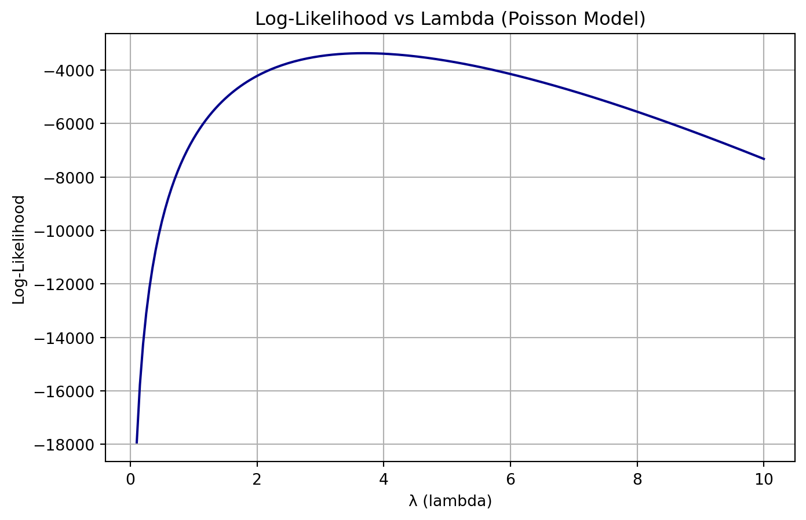
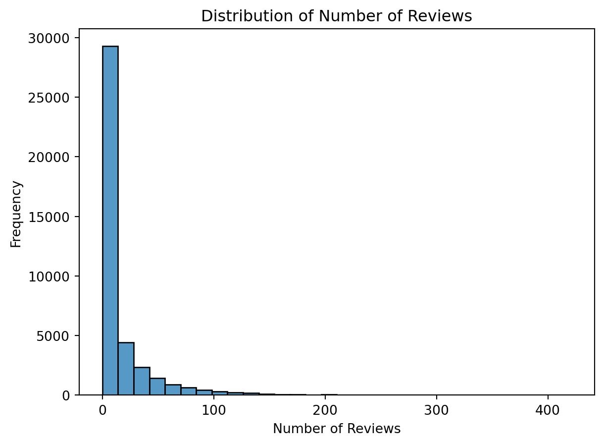
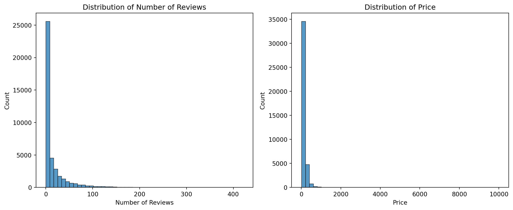

Reading blueprinty’s data
import pandas as pd
blueprinty = pd.read_csv('blueprinty.csv')
blueprinty.head(5)| patents | region | age | iscustomer | |
|---|---|---|---|---|
| 0 | 0 | Midwest | 32.5 | 0 |
| 1 | 3 | Southwest | 37.5 | 0 |
| 2 | 4 | Northwest | 27.0 | 1 |
| 3 | 3 | Northeast | 24.5 | 0 |
| 4 | 3 | Southwest | 37.0 | 0 |
Blueprinty is a small firm that makes software for developing blueprints specifically for submitting patent applications to the US patent office. Their marketing team would like to make the claim that patent applicants using Blueprinty’s software are more successful in getting their patent applications approved. Ideal data to study such an effect might include the success rate of patent applications before using Blueprinty’s software and after using it. Unfortunately, such data is not available.
However, Blueprinty has collected data on 1,500 mature (non-startup) engineering firms. The data include each firm’s number of patents awarded over the last 5 years, regional location, age since incorporation, and whether or not the firm uses Blueprinty’s software. The marketing team would like to use this data to make the claim that firms using Blueprinty’s software are more successful in getting their patent applications approved.
import pandas as pd
blueprinty = pd.read_csv('blueprinty.csv')
blueprinty.head(5)| patents | region | age | iscustomer | |
|---|---|---|---|---|
| 0 | 0 | Midwest | 32.5 | 0 |
| 1 | 3 | Southwest | 37.5 | 0 |
| 2 | 4 | Northwest | 27.0 | 1 |
| 3 | 3 | Northeast | 24.5 | 0 |
| 4 | 3 | Southwest | 37.0 | 0 |
import matplotlib.pyplot as plt
import seaborn as sns
import numpy as np
plt.figure(figsize=(12, 5))
plt.subplot(1, 2, 1)
sns.histplot(data=blueprinty, x="patents", hue='iscustomer', kde=False, bins=15, palette="Set1", multiple="stack")
plt.title("Distribution of Patent Counts by Customer Status")
plt.xlabel("Number of Patents")
plt.ylabel("Number of Firms")
plt.legend(title="Blueprinty Customer", labels=["No", "Yes"])
plt.subplot(1, 2, 2)
sns.barplot(data=blueprinty, x="iscustomer", y="patents", hue="iscustomer", palette="Set1", estimator=np.mean, dodge=False, legend=False)
plt.title("Average Number of Patents by Customer Status")
plt.xlabel("Blueprinty Customer")
plt.ylabel("Average Patent Count")
plt.xticks([0, 1], ["No", "Yes"])
plt.tight_layout()
plt.show()
Observation:
Blueprinty customers are not selected at random. It may be important to account for systematic differences in the age and regional location of customers vs non-customers.
plt.figure(figsize=(12, 5))
plt.subplot(1, 2, 1)
sns.histplot(data=blueprinty, x="age", hue="iscustomer", kde=True, bins=20, palette="Set2", element="step", stat="density", common_norm=False)
plt.title("Distribution of Firm Age by Customer Status")
plt.xlabel("Firm Age (Years)")
plt.ylabel("Density")
plt.legend(title="Blueprinty Customer", labels=["No", "Yes"])
plt.subplot(1, 2, 2)
region_counts = pd.crosstab(blueprinty["region"], blueprinty["iscustomer"], normalize="index") * 100
region_counts.plot(kind="bar", stacked=True, ax=plt.gca(), colormap="Set2")
plt.title("Regional Composition by Customer Status")
plt.xlabel("Region")
plt.ylabel("Percentage (%)")
plt.legend(title="Blueprinty Customer", labels=["No", "Yes"])
plt.tight_layout()
plt.show()
Observation:
This further illustrates that the company age may affect whether to become a user and may also be associated with the number of patents, so this variable should be controlled when making causal inferences.
Since our outcome variable of interest can only be small integer values per a set unit of time, we can use a Poisson density to model the number of patents awarded to each engineering firm over the last 5 years. We start by estimating a simple Poisson model via Maximum Likelihood.
The mathmatical likelihood for_ \(Y \sim \text{Poisson}(\lambda)\). Note that \(f(Y|\lambda) = e^{-\lambda}\lambda^Y/Y!\).
from IPython.display import display, Math
display(Math(r"L(\lambda) = \prod_{i=1}^n \frac{e^{-\lambda} \lambda^{Y_i}}{Y_i!} = e^{-n\lambda} \cdot \lambda^{\sum Y_i} \cdot \frac{1}{\prod Y_i!}"))\(\displaystyle L(\lambda) = \prod_{i=1}^n \frac{e^{-\lambda} \lambda^{Y_i}}{Y_i!} = e^{-n\lambda} \cdot \lambda^{\sum Y_i} \cdot \frac{1}{\prod Y_i!}\)
The likelihood for the Poisson model. This is a function of lambda and Y. For example:_
poisson_loglikelihood <- function(lambda, Y){
...
}todo: Use your function to plot lambda on the horizontal axis and the likelihood (or log-likelihood) on the vertical axis for a range of lambdas (use the observed number of patents as the input for Y).
import numpy as np
import pandas as pd
import matplotlib.pyplot as plt
from scipy.special import factorial
Y = blueprinty["patents"].values
n = len(Y)
def poisson_loglikelihood(lmbda, Y):
if lmbda <= 0:
return -np.inf
return -n * lmbda + np.sum(Y * np.log(lmbda)) - np.sum(np.log(factorial(Y)))
lambda_range = np.linspace(0.1, 10, 200)
loglikelihood_values = [poisson_loglikelihood(lmbda, Y) for lmbda in lambda_range]
plt.figure(figsize=(8, 5))
plt.plot(lambda_range, loglikelihood_values, color='darkblue')
plt.title("Log-Likelihood vs Lambda (Poisson Model)")
plt.xlabel("λ (lambda)")
plt.ylabel("Log-Likelihood")
plt.grid(True)
plt.show()
todo: If you’re feeling mathematical, take the first derivative of your likelihood or log-likelihood, set it equal to zero and solve for lambda. You will find lambda_mle is Ybar, which “feels right” because the mean of a Poisson distribution is lambda.
import sympy as sp
from IPython.display import display, Math
lmbda, n, sum_y = sp.symbols('lambda n sum_y', positive=True)
log_likelihood = -n * lmbda + sum_y * sp.log(lmbda)
d_log_likelihood = sp.diff(log_likelihood, lmbda)
solution = sp.solve(d_log_likelihood, lmbda)[0]
display(Math(r"\textbf{Step 1: Define the log-likelihood function}"))
display(Math(r"\log L(\lambda) = -n\lambda + \left(\sum Y_i\right)\log \lambda"))
display(Math(r"\textbf{Step 2: Take the first derivative}"))
display(Math(r"\frac{d}{d\lambda} \log L(\lambda) = -n + \frac{\sum Y_i}{\lambda}"))
display(Math(r"\textbf{Step 3: Set the derivative equal to zero and solve for } \lambda"))
display(Math(r"0 = -n + \frac{\sum Y_i}{\lambda} \Rightarrow \hat{\lambda}_{\text{MLE}} = \frac{\sum Y_i}{n} = \bar{Y}"))
display(Math(r"\boxed{\hat{\lambda}_{\text{MLE}} = " + sp.latex(solution) + r"}"))\(\displaystyle \textbf{Step 1: Define the log-likelihood function}\)
\(\displaystyle \log L(\lambda) = -n\lambda + \left(\sum Y_i\right)\log \lambda\)
\(\displaystyle \textbf{Step 2: Take the first derivative}\)
\(\displaystyle \frac{d}{d\lambda} \log L(\lambda) = -n + \frac{\sum Y_i}{\lambda}\)
\(\displaystyle \textbf{Step 3: Set the derivative equal to zero and solve for } \lambda\)
\(\displaystyle 0 = -n + \frac{\sum Y_i}{\lambda} \Rightarrow \hat{\lambda}_{\text{MLE}} = \frac{\sum Y_i}{n} = \bar{Y}\)
\(\displaystyle \boxed{\hat{\lambda}_{\text{MLE}} = \frac{sum_{y}}{n}}\)
todo: Find the MLE by optimizing your likelihood function with optim() in R or sp.optimize() in Python.
from scipy.optimize import minimize
# Define the negative log-likelihood function
def neg_log_likelihood(lmbda):
return -np.sum(Y * np.log(lmbda) - lmbda - np.log(factorial(Y)))
# Use minimize to find the MLE
result = minimize(neg_log_likelihood, x0=[1.0], bounds=[(1e-6, None)])
lambda_mle = result.x[0]
mle_df = pd.DataFrame({
"Parameter": ["lambda"],
"MLE Estimate": [lambda_mle]
})
mle_df| Parameter | MLE Estimate | |
|---|---|---|
| 0 | lambda | 3.684666 |
Next, we extend our simple Poisson model to a Poisson Regression Model such that \(Y_i = \text{Poisson}(\lambda_i)\) where \(\lambda_i = \exp(X_i'\beta)\). The interpretation is that the success rate of patent awards is not constant across all firms (\(\lambda\)) but rather is a function of firm characteristics \(X_i\). Specifically, we will use the covariates age, age squared, region, and whether the firm is a customer of Blueprinty.
todo: Update your likelihood or log-likelihood function with an additional argument to take in a covariate matrix X. Also change the parameter of the model from lambda to the beta vector. In this model, lambda must be a positive number, so we choose the inverse link function g_inv() to be exp() so that \(\lambda_i = e^{X_i'\beta}\). For example:
poisson_regression_likelihood <- function(beta, Y, X){
...
}import numpy as np
def poisson_regression_loglikelihood(beta, Y, X):
"""
Compute the log-likelihood for a Poisson regression model.
Parameters:
beta (numpy.ndarray): Coefficient vector (shape: p, where p is the number of covariates).
Y (numpy.ndarray): Response variable (shape: n, where n is the number of observations).
X (numpy.ndarray): Covariate matrix (shape: n x p).
Returns:
float: Log-likelihood value.
"""
linear_predictor = X @ beta
lambda_i = np.exp(linear_predictor)
log_likelihood = np.sum(Y * np.log(lambda_i) - lambda_i - np.log(np.math.factorial(Y)))
return log_likelihoodtodo: Use your function along with R’s optim() or Python’s sp.optimize() to find the MLE vector and the Hessian of the Poisson model with covariates. Specifically, the first column of X should be all 1’s to enable a constant term in the model, and the subsequent columns should be age, age squared, binary variables for all but one of the regions, and the binary customer variable. Use the Hessian to find standard errors of the beta parameter estimates and present a table of coefficients and standard errors.
# Create variables
blueprinty["age_std"] = (blueprinty["age"] - blueprinty["age"].mean()) / blueprinty["age"].std()
blueprinty["age_squared_std"] = blueprinty["age_std"] ** 2
# 建立 region dummy 變數（去掉 baseline 類別，例如 Midwest）
region_dummies = pd.get_dummies(blueprinty["region"], drop_first=True)
# 建立設計矩陣 X（含截距、標準化變數與 dummy）
X = pd.concat([
pd.Series(1, index=blueprinty.index, name="intercept"),
blueprinty[["age_std", "age_squared_std", "iscustomer"]],
region_dummies
], axis=1)
X_mat = X.astype(float).values # Ensure all values are numeric and convert to numpy array
Y = blueprinty["patents"].values
n, k = X_mat.shape
# 定義 Poisson log-likelihood 函數（同前）
def poisson_regression_loglikelihood(beta, Y, X):
lin_pred = X @ beta
lambda_i = np.exp(lin_pred)
return np.sum(Y * np.log(lambda_i) - lambda_i - np.log(factorial(Y)))
# 負的 log-likelihood（for minimization）
def neg_log_likelihood(beta):
return -poisson_regression_loglikelihood(beta, Y, X_mat)
# 最小化（使用 BFGS 以便取得 Hessian）
beta_init = np.zeros(k)
result = minimize(neg_log_likelihood, x0=beta_init, method='BFGS')
# 取得估計值與標準誤
beta_hat = result.x
hessian_inv = result.hess_inv # 近似的逆 Hessian
se_beta = np.sqrt(np.diag(hessian_inv))
# 建立結果表格
mle_table = pd.DataFrame({
"Variable": X.columns,
"Estimate": beta_hat,
"Std. Error": se_beta
})
mle_table| Variable | Estimate | Std. Error | |
|---|---|---|---|
| 0 | intercept | 1.344676 | 0.037181 |
| 1 | age_std | -0.057723 | 0.016104 |
| 2 | age_squared_std | -0.155814 | 0.021726 |
| 3 | iscustomer | 0.207591 | 0.048531 |
| 4 | Northeast | 0.029170 | 0.063337 |
| 5 | Northwest | -0.017575 | 0.055881 |
| 6 | South | 0.056561 | 0.058004 |
| 7 | Southwest | 0.050576 | 0.048037 |
todo: Check your results using R’s glm() function or Python sm.GLM() function.
import statsmodels.api as sm
# 建立新的資料集，將 age 做標準化並建立 age_squared
blueprinty["age_std"] = (blueprinty["age"] - blueprinty["age"].mean()) / blueprinty["age"].std()
blueprinty["age_squared_std"] = blueprinty["age_std"] ** 2
# 建立地區虛擬變數（drop_first 代表設定 baseline）
region_dummies = pd.get_dummies(blueprinty["region"], drop_first=True)
# 合併設計矩陣
X_sm = pd.concat([
blueprinty[["age_std", "age_squared_std", "iscustomer"]],
region_dummies
], axis=1)
# 確保所有數據為數值型
X_sm = X_sm.astype(float)
# 加入截距項
X_sm = sm.add_constant(X_sm)
# 定義應變數
Y = blueprinty["patents"]
# 建立 Poisson 回歸模型
model = sm.GLM(Y, X_sm, family=sm.families.Poisson())
result = model.fit()
# 顯示結果摘要
result.summary()| Dep. Variable: | patents | No. Observations: | 1500 |
| Model: | GLM | Df Residuals: | 1492 |
| Model Family: | Poisson | Df Model: | 7 |
| Link Function: | Log | Scale: | 1.0000 |
| Method: | IRLS | Log-Likelihood: | -3258.1 |
| Date: | Fri, 02 May 2025 | Deviance: | 2143.3 |
| Time: | 01:57:27 | Pearson chi2: | 2.07e+03 |
| No. Iterations: | 5 | Pseudo R-squ. (CS): | 0.1360 |
| Covariance Type: | nonrobust |
| coef | std err | z | P>|z| | [0.025 | 0.975] | |
| const | 1.3447 | 0.038 | 35.059 | 0.000 | 1.270 | 1.420 |
| age_std | -0.0577 | 0.015 | -3.843 | 0.000 | -0.087 | -0.028 |
| age_squared_std | -0.1558 | 0.014 | -11.513 | 0.000 | -0.182 | -0.129 |
| iscustomer | 0.2076 | 0.031 | 6.719 | 0.000 | 0.147 | 0.268 |
| Northeast | 0.0292 | 0.044 | 0.669 | 0.504 | -0.056 | 0.115 |
| Northwest | -0.0176 | 0.054 | -0.327 | 0.744 | -0.123 | 0.088 |
| South | 0.0566 | 0.053 | 1.074 | 0.283 | -0.047 | 0.160 |
| Southwest | 0.0506 | 0.047 | 1.072 | 0.284 | -0.042 | 0.143 |
todo: Interpret the results.
todo: What do you conclude about the effect of Blueprinty’s software on patent success? Because the beta coefficients are not directly interpretable, it may help to create two fake datasets: X_0 and X_1 where X_0 is the X data but with iscustomer=0 for every observation and X_1 is the X data but with iscustomer=1 for every observation. Then, use X_0 and your fitted model to get the vector of predicted number of patents (y_pred_0) for every firm in the dataset, and use X_1 to get Y_pred_1 for every firm. Then subtract y_pred_1 minus y_pred_0 and take the average of that vector of differences.
AirBnB is a popular platform for booking short-term rentals. In March 2017, students Annika Awad, Evan Lebo, and Anna Linden scraped of 40,000 Airbnb listings from New York City. The data include the following variables:
import pandas as pd
airbnb = pd.read_csv('airbnb.csv')
airbnb.head(5)| Unnamed: 0 | id | days | last_scraped | host_since | room_type | bathrooms | bedrooms | price | number_of_reviews | review_scores_cleanliness | review_scores_location | review_scores_value | instant_bookable | |
|---|---|---|---|---|---|---|---|---|---|---|---|---|---|---|
| 0 | 1 | 2515 | 3130 | 4/2/2017 | 9/6/2008 | Private room | 1.0 | 1.0 | 59 | 150 | 9.0 | 9.0 | 9.0 | f |
| 1 | 2 | 2595 | 3127 | 4/2/2017 | 9/9/2008 | Entire home/apt | 1.0 | 0.0 | 230 | 20 | 9.0 | 10.0 | 9.0 | f |
| 2 | 3 | 3647 | 3050 | 4/2/2017 | 11/25/2008 | Private room | 1.0 | 1.0 | 150 | 0 | NaN | NaN | NaN | f |
| 3 | 4 | 3831 | 3038 | 4/2/2017 | 12/7/2008 | Entire home/apt | 1.0 | 1.0 | 89 | 116 | 9.0 | 9.0 | 9.0 | f |
| 4 | 5 | 4611 | 3012 | 4/2/2017 | 1/2/2009 | Private room | NaN | 1.0 | 39 | 93 | 9.0 | 8.0 | 9.0 | t |
todo: Assume the number of reviews is a good proxy for the number of bookings. Perform some exploratory data analysis to get a feel for the data, handle or drop observations with missing values on relevant variables, build one or more models (e.g., a poisson regression model for the number of bookings as proxied by the number of reviews), and interpret model coefficients to describe variation in the number of reviews as a function of the variables provided.```
import pandas as pd
import numpy as np
import seaborn as sns
import statsmodels.api as sm
import matplotlib.pyplot as plt
# Step 1: Exploratory Data Analysis (EDA)
# Visualize the distribution of the number of reviews
sns.histplot(airbnb['number_of_reviews'], bins=30, kde=False)
plt.title('Distribution of Number of Reviews')
plt.xlabel('Number of Reviews')
plt.ylabel('Frequency')
plt.show()
relevant_columns = ['number_of_reviews', 'price', 'room_type', 'bedrooms', 'bathrooms', 'instant_bookable']
airbnb_cleaned = airbnb[relevant_columns].dropna()# Convert categorical variables to dummy variables
airbnb_cleaned = pd.get_dummies(airbnb_cleaned, columns=['room_type', 'instant_bookable'], drop_first=True)
# Step 3: Build a Poisson Regression Model
# Define response variable (Y) and predictors (X)
Y = airbnb_cleaned['number_of_reviews']
X = airbnb_cleaned.drop(columns=['number_of_reviews'])
# Ensure all columns in X are numeric
X = X.apply(pd.to_numeric, errors='coerce')
# Convert boolean columns to integers
for col in X.select_dtypes(include=['bool']).columns:
X[col] = X[col].astype(int)
# Drop rows with any NaN values after conversion
X = X.dropna()
# Check for any remaining non-numeric data
if not all(X.dtypes.apply(lambda dtype: np.issubdtype(dtype, np.number))):
raise ValueError("Non-numeric data found in predictors. Please check the input data.")
# Add intercept
X = sm.add_constant(X)
# Fit the Poisson regression model
poisson_model = sm.GLM(Y, X, family=sm.families.Poisson())
poisson_results = poisson_model.fit()
poisson_results.summary()| Dep. Variable: | number_of_reviews | No. Observations: | 40395 |
| Model: | GLM | Df Residuals: | 40388 |
| Model Family: | Poisson | Df Model: | 6 |
| Link Function: | Log | Scale: | 1.0000 |
| Method: | IRLS | Log-Likelihood: | -7.1425e+05 |
| Date: | Fri, 02 May 2025 | Deviance: | 1.3053e+06 |
| Time: | 01:57:28 | Pearson chi2: | 2.13e+06 |
| No. Iterations: | 6 | Pseudo R-squ. (CS): | 0.4279 |
| Covariance Type: | nonrobust |
| coef | std err | z | P>|z| | [0.025 | 0.975] | |
| const | 2.8427 | 0.004 | 644.234 | 0.000 | 2.834 | 2.851 |
| price | -0.0005 | 1.23e-05 | -37.528 | 0.000 | -0.000 | -0.000 |
| bedrooms | 0.0994 | 0.002 | 49.712 | 0.000 | 0.095 | 0.103 |
| bathrooms | -0.1127 | 0.004 | -29.342 | 0.000 | -0.120 | -0.105 |
| room_type_Private room | -0.1592 | 0.003 | -55.874 | 0.000 | -0.165 | -0.154 |
| room_type_Shared room | -0.4149 | 0.009 | -47.914 | 0.000 | -0.432 | -0.398 |
| instant_bookable_t | 0.3613 | 0.003 | 125.436 | 0.000 | 0.356 | 0.367 |
sns.scatterplot(data=airbnb_cleaned, x='price', y='number_of_reviews', alpha=0.5)
plt.title('Number of Reviews vs Price')
plt.xlabel('Price')
plt.ylabel('Number of Reviews')
plt.show()